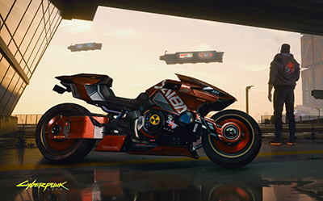
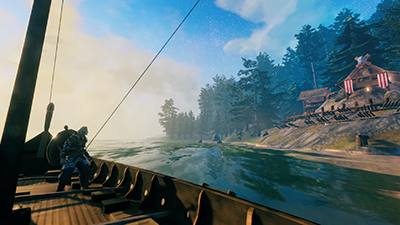
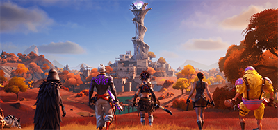

|  |
Looking to explore a vast city and get lost in the dystopia that is Night City? Look no further than Cyberpunk 2077. Though this game had a bumpy start, it is surely one that you cant afford to miss adding to your collection. With insanely beautiful graphics and an intriquite system to help "V" become the most feared and deadliest outlaw in Night City. Are you ready to take the streets back from Corpo thugs Samuai? Click on the image to learn more about Cyberpunk 2077 Source: https://www.cyberpunk.net/us/en/ (All Copyrights to CD Projekt Red 2021) |
|  |
Maybe guns, excessive violence and drama aren't your cup of tea and you just want to run around in a vast world and explore the mystical lands of Nordic mythology? Well, the game Valheim lets you start off as a warrior, chosen to help Odin defeat unruly beasts and keep his kingdom in check. You start with just your hands and a loincloth, finding your way through the various biomes and areas to become more powerful, build settlements and become stronger! This is one of the most relaxing video games of all time and by far one of the staff's favorites! Check out Valheim today with Odin's blessing... Source: https://www.valheimgame.com (All Copyrights to Iron Gate Studios 2021) |
|  |
So maybe you're more of a competetive player, well there's no doubt that in current popular culture there is one game that rules them all over various ages and backgrounds. You may have heard it, but maybe you should check out Fortnite! That's right, Fortnite provides players with a unique combat style of building and battle royale to give the user tons of options with how to be #1 on the battlefield! This game is full of fun characters, skins, and you can even join clans! The best par, it is free! Download it today and join up! Source: https://www.epicgames.com/fortnite/en-US/home (All Copyright to Epic Game Studios 2021) |
|
You may ask yourself... "Sweet! There are cool games to play, but what platform should I play them on and where should I buy them?" Well... the answer is simple: PC and Steam! Playing on PC gives users such a more rich and immersive experience, more customization and tons of graphical prowess to boot. Now, Steam is one of the best known platforms that delivers AAA gaming to the masses in a seamless and organized fashion! In our opinion, it is THE WAY to play and enjoy games! If however, you are stuck with a console! No worries! We recommend you visit your local retailer for the newest copies of a game! Source: https://logos-world.net/steam-logo/ |